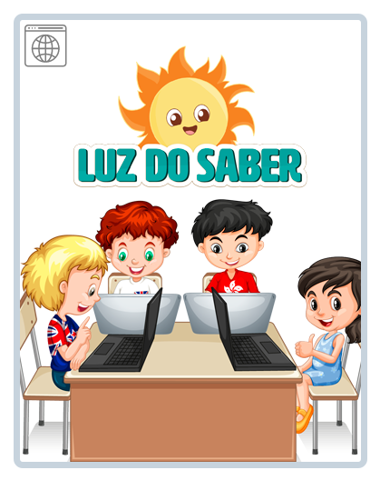

Os melhores jogos e
atividades para crianças
aprenderem brincando!
Clique no botão abaixo para saber mais
Acessar
Os melhores jogos e
atividades para crianças
aprenderem brincando!
Clique no botão abaixo para saber mais
Acessar
Previous
Next